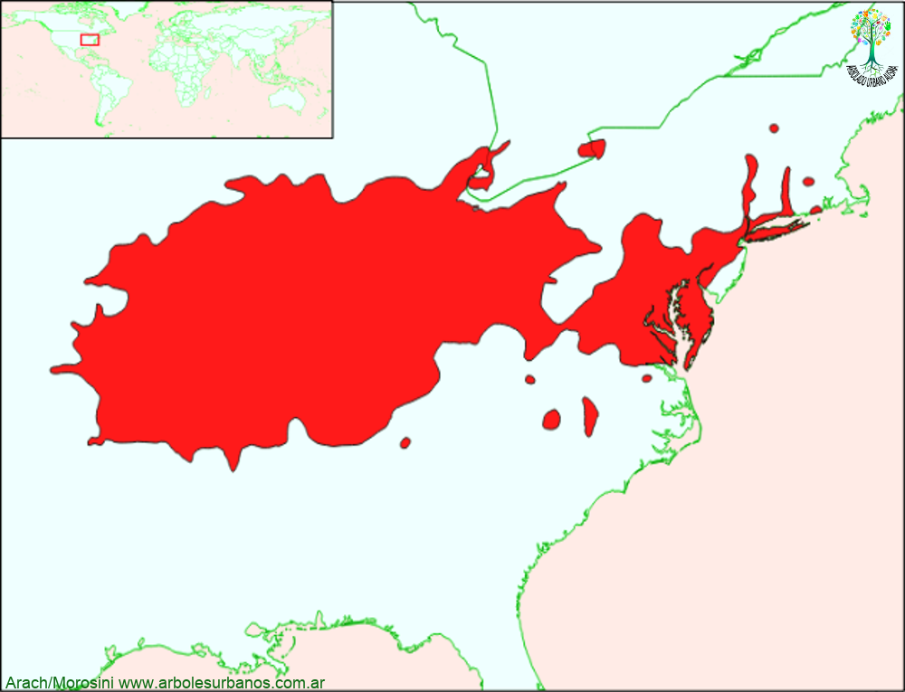

Click en las imágenes para ampliar

{kind=link}
{kind=link}
{kind=link}
- NOMBRE CIENTÍFICO
- Quercus palustris
- FAMILIA BOTÁNICA
- Fagáceas
- DESCRIPCIÓN GENERAL
- Árbol de gran porte superando los 35 metros, la bibliografía cita ejemplares de 37 metros y de un metro y medio de diámetro en su área de origen. Su copa es de forma anchamente cónica. Tiene corteza de color pardo-grisácea y lisa en su juventud, agrietándose en placas cuando madura el árbol. Sus hojas son simples, de forma elípticas, con profundos lóbulos acabados en agudos dientes. Poseen un tamaño de 15 cm. de largo por 5 cm. de ancho. Son de color verde brillante en la cara superior y de un verde más claro en la inferior, cambiando a intensos tonos rojizos antes de caer en otoño. Las flores aparecen a mediados de la primavera, junto con las hojas nuevas. Poco vistosas, las flores femeninas y masculinas tienen un color verde amarillento, y crecen separadas entre sí, en un mismo árbol. Su fruto es una bellota, de hasta un centímetro y medio de largo, unida a la planta por una cúpula ancha y superficial.
- ORIGEN
- Centro y costa este de los Estados Unidos, el límite norte son los grandes lagos y el sur es Tennessee, Carolina del Norte y Virginia.
- USOS
- Su madera es de buena calidad; dura y resistente, por lo que se emplea en la construcción, se la comercializa junto con el “grupo de los robles rojos. Por su coloración otoñal tiene uso ornamental.
- REPRODUCCIÓN
- Se puede propagar mediante semillas, también se puede utilizar los retoños que producen los tocones para generar a partir de ellos plantas.
- PARTICULARIDADES
- Especie de crecimiento relativamente rápido. Suele preferir suelos pobremente drenados y anegadizos. Donde crece naturalmente sus semillas, son el sustento natural de muchas especies de aves, como patos y pavos; así también de ciervos y demás mamíferos.
Roble de los pantanos